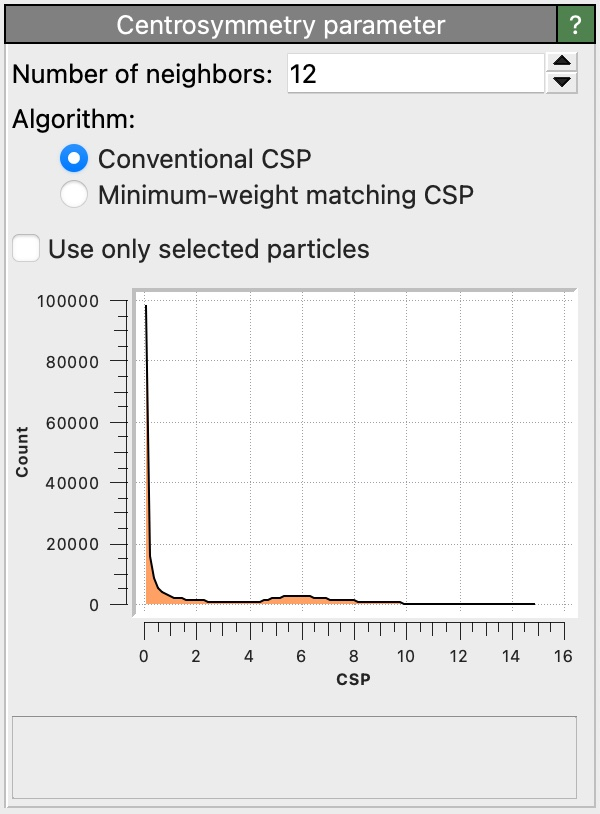

Centrosymmetry parameter
{kind=link}
This modifier calculates the centrosymmetry parameter (CSP) [Kelchner, Plimpton, Hamilton, Phys. Rev. B, 58, 11085 (1998)] for each particle. In solid-state systems the centrosymmetry parameter is a useful measure of the local lattice disorder around an atom and can be used to characterize whether the atom is part of a perfect lattice, a local defect (e.g. a dislocation or stacking fault), or located at a surface.
Definition
The CSP value \(p_{\mathrm{CSP}}\) of an atom having \(N\) nearest neighbors (\(N = 12\) for face-centered cubic, \(N = 8\) for body-centered cubic lattices) is given by
\(p_{\mathrm{CSP}} = \sum_{i=1}^{N/2}{|\mathbf{r}_i + \mathbf{r}_{i+N/2}|^2}\),
where \(\mathbf{r}_i\) and \(\mathbf{r}_{i+N/2}\) are two neighbor vectors from the central atom to a pair of opposite neighbor atoms. For lattice sites in an ideal centrosymmetric crystal, the contributions of all neighbor pairs in this formula will cancel, and the resulting CSP value will hence be zero. Atomic sites within a defective crystal region, in contrast, typically have a disturbed, non-centrosymmetric neighborhood. In this case the CSP becomes positive. Using an appropriate threshold, to allow for small perturbations due to thermal displacements and elastic strains, the CSP can be used as an order parameter to filter out atoms that are part of crystal defects.
The calculated atomic CSP values are stored in the Centrosymmetry output particle property by the modifier.
A histogram of the CSP values of the entire particle system is displayed in the modifier panel.
You can use the Color coding modifier to color atoms based on their CSP value or use the Expression selection modifier to select atoms having a CSP value below some threshold. These undisturbed atoms can then be hidden to reveal crystal defect atoms by using the Delete selected modifier.
Number of neighbors
This parameter specifies the number of nearest neighbors that should be taken into account when computing the centrosymmetry value for an atom. This parameter value should match the ideal number of nearest neighbors in the crystal lattice at hand (12 in fcc crystals; 8 in bcc). More generally, it must be a positive, even integer.
CSP algorithms
The modifier supports two modes of operation:
- Conventional CSP
This mode uses the same algorithm as LAMMPS for calculating the centrosymmetry parameter. Weights are calculated between all \(N (N - 1) / 2\) pairs of neighbor atoms, and the CSP is calculated as the summation of the \(N / 2\) lowest weights.
- Minimum-weight matching CSP
The conventional CSP algorithm performs well on highly centrosymmetric structures. In acentrosymmetric structures, however, it often assigns similar CSP values to very different structures, which results from the “greedy” selection of neighbor pair weights. The minimum-weight matching CSP [Larsen] ensures that neighbor relationships are reciprocal, which results in a better separation of CSP values between e.g. HCP atoms and surface defect atoms. This algorithm is more computationally expensive.
The option Use only selected particles restricts the analysis to the subset of currently selected particles only. Unselected particles will be ignored in the computation of the centrosymmetry values of selected particles (as if they did not exist), and their own centrosymmetry values will be set to zero. This option is useful if you want to analyze a sub-lattice made only of atoms of a certain type.
See also
ovito.modifiers.CentroSymmetryModifier (Python API)